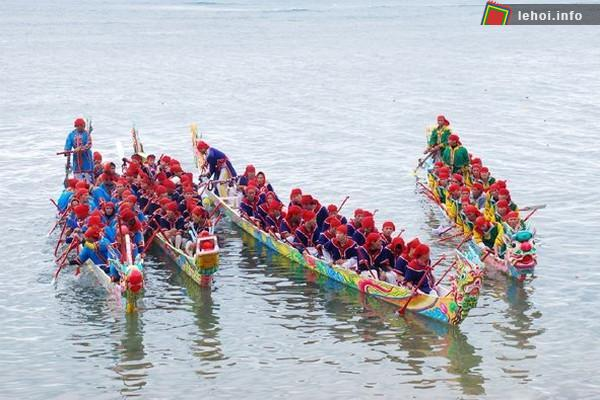
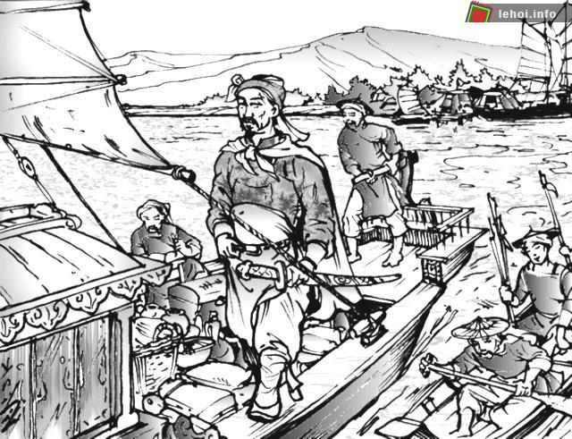

Theo Wikipedia, Lễ hội là một sự kiện văn hóa được tổ chức mang tính cộng đồng. "Lễ" là hệ thống những hành vi, động tác nhằm biểu hiện sự tôn kính của con người với thần linh, phản ánh những ước mơ chính đáng của con người trước cuộc sống mà bản thân họ chưa có khả năng thực hiện. "Hội" là sinh hoạt văn hóa, tôn giáo, nghệ thuật của cộng đồng, xuất phát từ nhu cầu cuộc sống.
Lễ hội là hoạt động tập thể và thường có liên quan đến tín ngưỡng, tôn giáo. Con người xưa kia rất tin vào trời đất, thần linh. Các lễ hội cổ truyền phản ảnh hiện tượng đó. Tôn giáo rất có ảnh hưởng tới lễ hội. Tôn giáo thông qua lễ hội đê phô trương thanh thế, lễ hội nhờ có tôn giáo đề thần linh hóa những thứ trần tục. Nhưng trải qua thời gian, trong nhiều lễ hội, tính tôn giáo dần giảm bớt và chỉ còn mang nặng tính văn hóa.
Theo thống kê 2009, hiện cả nước Việt Nam có 7.966 lễ hội; trong đó có 7.039 lễ hội dân gian (chiếm 88,36%), 332 lễ hội lịch sử (chiếm 4,16%), 544 lễ hội tôn giáo (chiếm 6,28%), 10 lễ hội du nhập từ nước ngoài (chiếm 0,12%), còn lại là lễ hội khác (chiếm 0,5%).
Lễ hội vải thiều Thanh Hà lần đầu tiên dự kiến tổ chức cuối tháng 5 năm 2018 với khoảng 600 khách mời. Lễ hội vải thiều Thanh Hà là cơ hội để quảng bá, giới thiệu đặc sản địa phương; qua đó thúc đẩy giao lưu, mở rộng việc thu mua xuất nhập khẩu nhằm nâng cao giá trị nông sản, xúc tiến đầu tư vào lĩnh vực nông nghiệp và du lịch.
Du khách tham gia lễ hội vải Thanh Hà sẽ được tham quan cây Vải Tổ, thăm các vùng sản xuất vải thiều theo tiêu chuẩn VietGap, trải nghiệm hái vải...
Hội đền Gốm diễn ra liên tục 7 ngày đêm từ 13-21/8 âm lịch tại xã Cổ Thành, huyện Chí Linh, tỉnh Hải Dương. Đền Gốm thờ tướng Trần Khánh Dư - người có công lớn đánh chìm toàn bộ thuyền lương của quân Nguyên Mông tại cửa biển Quảng Ninh năm 1288.
Du khách tham dự hội đền Gốm chủ yếu là ngư dân ven biển tỉnh Hải Phòng, Quảng Ninh... Hội đền Gốm thường diễn lại một số tích truyện dân gian như: bơi chải, rước nước... để cầu mong mưa thuận gió hòa, ngư dân đi biển quan toàn, thu được nhiều cá tôm. Hội đền Gốm là phong tục tập quán lâu đời, nét đẹp văn hóa cần được bảo tồn.
Ghi nhận công lao của Nhân Huệ vương Trần Khánh Dư, sau khi ông qua đời, người dân địa phương đã xây dựng đền thờ ở đầu làng Gốm bên bờ sông kinh thầy. Đền Gốm được xây dựng vào thế kỷ XIV. Trải qua nhiều thăng trầm lịch sử, di tích đền Gốm được trùng tu tôn tạo nhiều lần. Thời nhà Lê, đền Gốm được trùng tu lại theo kiến trúc kiểu chữ "đinh" gồm 3 lớp nhà, 5 gian đại bái, 5 gian trung từ và 3 gian hậu cung. Khi thực dân Pháp xâm lược nước ta, đền Gốm cũng bị chúng đốt dỡ. Đến năm 1933, nhân dân công đức trùng tu lại toàn bộ đền Gốm, vẫn giữ nguyên kiến trúc 3 lớp nhà như cũ. Chỉ có nhà đại bái 5 gian được mở rộng thêm hai gian đầu để làm miếu cộ.